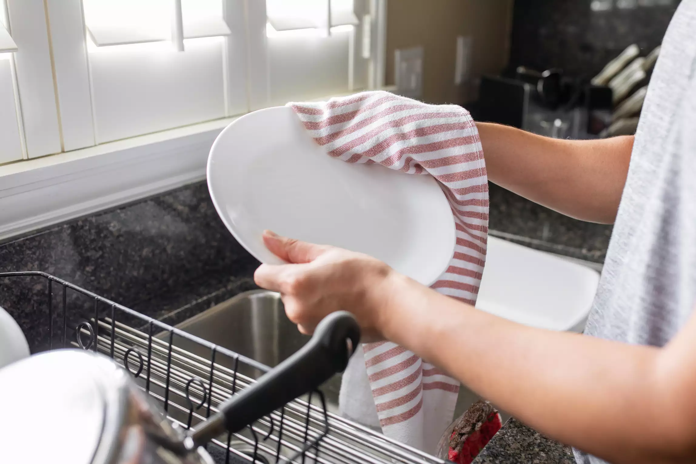

While air-drying is much easier, hand drying gets the job done quicker! Be mindful on how clean your towel is, and use paper towels on dishes that may still have traces of grease.Once each dish is dry, make sure to put them back in their intended places in the cupboards of your kitchen. After everything is put away, you have completed washing the dishes!
